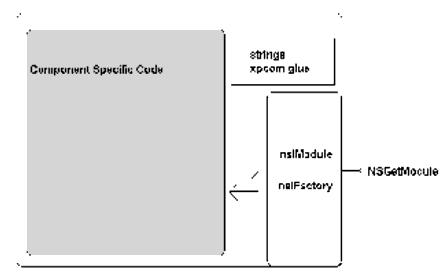
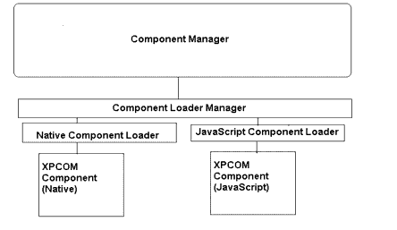
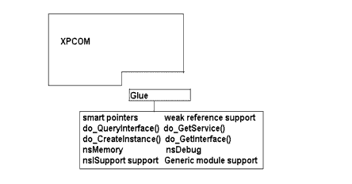
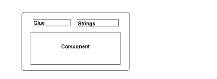

CHAPTER 3 Component Internals
Where the previous chapter described components from the perspective of a client of XPCOM components, this chapter discusses components from the perspective of the software developer. Read on to see how components are generally implemented in XPCOM, or you can skip to the next chapter, where the WebLock component tutorial takes you step by step through the component creation process.
Creating Components in C++
Let's start by examining how XPCOM components are written in C++. The most common type of component is one that is written in C++ and compiled into a shared library (a DLL on a Windows system or a DSO on Unix).
The illustration below shows the basic relationship between the shared library containing the component implementation code you write and the XPCOM framework itself. In this diagram, the outer boundary is that of the module, the shared library in which a component is defined.

Figure 1. A Component in the XPCOM FrameworkWhen you build a component or module and compile it into a library, it must export a single method named NSGetModule. This NSGetModule function is the entry point for accessing the library. It gets called during registration and unregistration of the component, and when XPCOM wants to discover what interfaces or classes the module/library implements. In this chapter we will outline this entire process.
As Figure 1 illustrates, in addition to the NSGetModule entry point, there are nsIModule and nsIFactory interfaces that control the actual creation of the component, and also the string and XPCOM glue parts, which we'll discuss in some detail in the next section (see "XPCOM Glue" on page 48"). These latter supply ease-of-development utilites like smart pointers, generic modules support, and simple string implementations. The largest and possibly most complex part of a component is the code specific to the component itself.
But Where Are the Components?
Components reside in modules, and those modules are defined in shared library files that typically sit in the components directory of an XPCOM application. A set of default libraries stored in this components directory makes up a typical Gecko installation, providing functionality that consists of networking, layout, composition, a cross-platform user interface, and others. Another, even more basic view of this relationship of components to the files and interfaces that define them is shown in Figure 2 on page 57. The component is an abstraction sitting between the actual module in which it is implemented and the objects that its factory code creates for use by clients.
XPCOM Initialization
To understand why and when your component library gets called, it is important to understand the XPCOM initalization process. When an application starts up, that application may initialize XPCOM. The sequence of events that kicks off this XPCOM initialization may be triggered by user action or by the application startup itself. A web browser that embeds Gecko, for example, may initialize XPCOM at startup through the embedding APIs. Another application may delay this startup until XPCOM is needed for the first time. In either case, the initialization sequence within XPCOM is the same.
XPCOM starts when the application makes a call to initialize it. Parameters passed to this startup call allow you to configure some aspects of XPCOM, including the customization of location of specific directories. The main purpose of the API at this point is to change which components directory XPCOM searches when it looks for XPCOM components. This is how the API is used, for example, in the Gecko Run-time Environment (GRE).
XPCOM Startup
The six basic steps to XPCOM startup are as follows:
- Application starts XPCOM.
- XPCOM sends a notification that it's beginning startup.
- XPCOM finds and processes the component manifest (see "Component Manifests" below).
- XPCOM finds and processes the type library manifest (see "Type Library Manifests" below).
- If there are new components, XPCOM registers them:
Component manifests and type library manifests are described in the following section, " XPCOM Registry Manifests".
- a. XPCOM calls autoregistration start.
- b. XPCOM registers new components.
- c. XPCOM calls autoregistration end.
XPCOM Registry Manifests
XPCOM uses special files called manifests to track and persist information about the components to the local system. There are two types of manifests that XPCOM uses to track components:
Component Manifests
When XPCOM first starts up, it looks for the component manifest, which is a file that lists all registered components, and stores details on exactly what each component can do. XPCOM uses the component manifest to determine which components have been overridden. Starting with Mozilla 1.2, this file is named compreg.dat and exists in the components directory, but there are efforts to move it out of this location to a less application-centric (and thus more user-centric) location. Any Gecko-based application may choose to locate it elsewhere.
XPCOM reads this file into an in-memory database.
Type Library Manifests
Another important file that XPCOM reads in is the type library manifest file. This file is also located in the components directory and is named xpti.dat. It includes the location and search paths of all type library files on the system. This file also lists all known interfaces and links to the type library files that define these interface structures. These type library files are at the core of XPCOM scriptablity and the binary component architecture of XPCOM.
Type Library Manifests
Type library manifests contain the following information:
Using the data in these two manifests, XPCOM knows exactly which component libraries have been installed and what implementations go with which interfaces. Additionally, it relates the components to the type libraries in which the binary representations of the interfaces they support are defined.
The next section describes how to hook into the XPCOM startup and registration process and make the data about your component available in these manifests, so that your component will be found and registered at startup.
Registration Methods in XPCOM
Once the manifest files are read in, XPCOM checks to see if there are any components that need to be registered. There are two supported ways to go about registering your XPCOM component. The first is to use XPInstall, which is an installation technology that may or may not come with a Gecko application and provides interfaces for registering your component during installation. Another, more explicit way to register your component is to run the application regxpcom, which is built as part of Mozilla and also available in the Gecko SDK. regxpcom registers your component in the default component registry.
A Gecko embedding application may also provide its own way of registering XPCOM components using the interface that is in fact used by both XPInstall and regxpcom, nsIComponentRegistrar. An application, for example, could provide a "registration-less" component directory whose components are automatically registered at startup and unregistered at shutdown. Component discovery does not currently happen automatically in non-debug builds of Gecko, however.
When the registration process begins, XPCOM broadcasts to all registered observers a notification that says XPCOM has begun the registration of new components. After all components are registered, another notification is fired saying that XPCOM is done with the registration step. The nsIObserver interface that handles this notification is discussed in the chapter "Tutorial: Starting WebLock".
Once registration is complete and the notifications have fired, XPCOM is ready to be used by the application. If XPCOM registered your component, then it will be available to other parts of the XPCOM system. The "XPCOM Initialization" section in this chapter describes registration in more detail.
Autoregistration
The term autoregistration is sometimes used synonymously with registration in XPCOM. In the What is Registration? box on the previous page, we describe the three ways you can register components with XPCOM. Sometimes, applications use the nsIComponentRegistrar interface and create their own code for watching a particular directory and registering new components that are added there, which is what's often referred to as autoregistration. You should always know what the installation and registration requirements are for the applications that will be using your component.
The Shutdown Process
When the application is ready to shutdown XPCOM, it calls NS_ShutdownXPCOM. When that method is called, the following sequence of events occurs:
- XPCOM fires a shutdown notification to all registered observers.
- XPCOM closes down the Component Manager, the Service Manager and associated services.
- XPCOM frees all global services.
- NS_ShutdownXPCOM returns and the application may exit normally.
Component Loaders
Components can be written in many languages. So far this book has been focusing on "native components," shared libraries exporting a NSGetModule symbol. But if there is a component loader for Javascript installed, then you can also write a JavaScript component.
To register, unregister, load and manage various component types, XPCOM abstracts the interface between the XPCOM component and XPCOM with the Component Loader. This loader is responsible for initialization, loading, unloading, and supporting the nsIModule interface on behalf of each component. It is the Component Loader's responsibility to provide scriptable component support.
When building a "native" component, the component loader looks for an exported symbol from the components shared library. "Native" here includes any language that can generate a platform native dynamically loaded library. Scripting languages and other "non-native" languages usually have no way to build native libraries. In order to have "non native" XPCOM components work, XPCOM must have a special component loader which knows how to deal with these type of components.
XPConnect, for example, provides a component loader that makes the various types, including the interfaces and their parameters, available to JavaScript. Each language supported by XPCOM must have a component loader.

Three parts of a XPCOM Component Library
XPCOM is like an onion. XPCOM components have at least three layers. From the innermost and moving outward these layers include:
The core XPCOM object is the object that will implement the functionality you need. For example, this is the object that may start a network download and implement interfaces that will listen to the progress. Or the object may provide a new content type handler. Whatever it does, this object is at the core of the XPCOM component, and the other layers are supporting it, plugging it into the XPCOM system. A single library may have many of these core objects.
One layer above the core object is the factory code. The factory object provides a basic abstraction of the core XPCOM object. Chapter 1 discussed the factory design pattern that's used in a factory object. At this layer of the XPCOM Component Library, the factory objects are factories for the core XPCOM objects of the layer below.
One more layer outward is the module code. The module interface provides yet another abstraction-this time of the factories-and allows for multiple factory objects. From the outside of the component library, there is only the single entry point, NSGetModule(). This point of entry may fan out to any number of factories, and from there, any number of XPCOM objects.
The following chapter details these layers in terms of the XPCOM interfaces that represent them. Here we will just introduce them. The factory design pattern in XPCOM is represented by the nsIFactory interface. The module layer is represented by the nsIModule interface. Most component libraries only need these two interfaces, along with the nsISupport interface, to have XPCOM load, recognize, and use their core object code.
In the next section, we'll be writing the code that actually compiles into a component library, and you will see how each layer is implemented and how each interface is used. Following this initial, verbose demonstration of the API's, we will introduce a faster more generic way of implementing the module and factory code using macros, which can make components much easier to create.
XPCOM Glue
XPCOM contains a lot of stuff. Most of the XPCOM interfaces are not frozen and are meant to be used only by the Gecko internals, not by clients. XPCOM provides many data structures from linked lists to AVL trees. Instead of writing your own linked list, it's tempting to reuse nsVoidArray or another publicly available class, but this might be a fatal mistake. At any time the class can change and give you unexpected behavior.
XPCOM makes for a very open environment. At runtime you can acquire any service or component merely by knowing a CID, or Contract ID, and an IID. At last count there were over 1300 interfaces defined in XPIDL. Of those 1300 interfaces, less than 100 were frozen, which means that a developer has a good chance of stumbling upon useful interfaces that aren't frozen. If an interface isn't explicitly marked "FROZEN" in the IDL comments, however-and most of them aren't-it will cause your component to possibly break or crash when the version changes.
The Glue Library
In general you should avoid any unfrozen interfaces, any symbols in XPCOM, or any other part of Gecko libraries that aren't frozen. However, there are some unfrozen tools in XPCOM that are used so often they are practically required parts of component programming.
The smart pointer class, nsCOMPtr, for example, which can make reference counting a lot less tedious and error-prone, is not actually frozen, and neither are nsDebug, a class for aiding in tracking down bugs, or nsMemory, a class to ensure that everyone uses the same heap, generic factory, and module. Instead of asking every developer to find and copy these various files into their own application, XPCOM provides a single library of "not-ready-to-freeze-but-really-helpful" classes that you can link into your application, as the following figure demonstrates.

Figure 5. XPCOM Glue and ToolsThis is the glue library. It provides a bridge, or "glue" layer, between your component and XPCOM.
A version of the glue library is built into XPCOM, and when your component uses it, it links a snapshot of this library: it includes a copy of these unfrozen classes directly, which allows the XPCOM library version to change without affecting the software. There is a slight footprint penalty to linking directly, but this gives your component freedom to work in any post Mozilla 1.2 environment. If footprint is a big issue in your component or application, you can trim out the pieces you don't need.
XPCOM String Classes
The base string types that XPCOM uses are nsAString and nsACString. These classes are described in the Mozilla String guide (see the "Resources" section in Appendix C).
The string classes that implement these abstract classes are another set of helpful, unfrozen classes in XPCOM. Most components and embedding applications need to link to some kind of string classes in order to utilize certain Gecko APIs, but the string code that Mozilla uses is highly complex and even more expensive than the glue code in terms of footprint (~100k). nsEmbedString and nsEmbedCString are available as very light string class implementations for component development, especially in small embedded applications. This string implementation does the bare minimum to support nsAString/nsACString string classes
In your own component, you can go "slim" and restrict yourself to the nsEmbedString or go "hog wild" and use all of the functionality of the other strings. WebLock restricts itself to using the simple nsEmbedString family of classes.

Figure 6. String Classes and XPCOMThe glue library provides stub functions for the public functions that XPCOM provides (see xpcom/build/nsXPCOM.h). When the glue library is initialized, it dynamically loads these symbols from the XPCOM library, which allows the component to avoid linking directly with the XPCOM library. You shouldn't have to link to the XPCOM library to create a XPCOM component-in fact, if your component has to, then something is wrong. .
| Copyright (c) 2003 by Doug Turner and Ian Oeschger. This material may be distributed only subject to the terms and conditions set forth in the Open Publication License, v1.02 or later. Distribution of substantively modified versions of this document is prohibited without the explicit permission of the copyright holder. Distribution of the work or derivative of the work in any standard (paper) book form is prohibited unless prior permission is obtained from the copyright holder. |